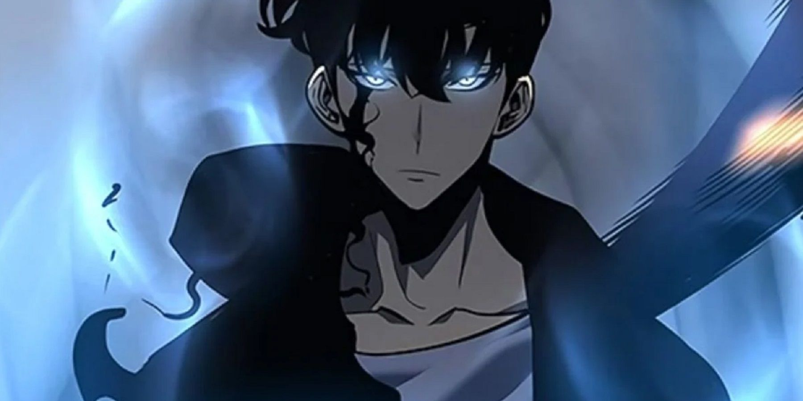

«Solo Liveling/ Поднятия уровня в одиночку» — это популярное аниме, которое завоевало сердца поклонников по всему миру. Основанное на манхве одноимённого названия, аниме погружает зрителя в мир, где герои сражаются с монстрами и выполняют опасные задания, чтобы выжить и стать сильнейшими. Аниме впервые было анонсировано в 2024 году и сразу же привлекло внимание поклонников фэнтези и экшен-жанра. Первый сезон был встречен зрителями с восторгом, а динамичное развитие сюжета и зрелищные боевые сцены заставили миллионы фанатов ждать продолжения. На данный момент аниме включает два сезона. Первый сезон представляет начало путешествия главного героя, Джина У, который был обычным охотником, но после трагического происшествия стал единственным человеком, способным развивать свои силы без ограничений. Во втором сезоне, который продолжает историю, зрители погружаются в более сложные и эпичные сражения, а также в новые секреты мира. Однако на этом история не заканчивается! В 2027 году ожидается выход третьего сезона, который обещает стать еще более захватывающим. Создатели аниме планируют расширить вселенную и углубить сюжетные линии, чтобы фанаты могли наслаждаться ещё более масштабными приключениями главного героя.
- Жанр: экшен, фэнтези, приключения, боевые искусства.
- Сюжет: История о том, как главный герой, Джин У, стремится стать самым сильным охотником в мире, развивая свои способности и сталкиваясь с монстрами и опасностями.
- Графика: В аниме впечатляющая анимация, особенно в боевых сценах, что делает каждое сражение ярким и динамичным.
- Дата выпуска: Первый сезон — 2024 год, второй сезон — 2024-2025 год, третий сезон ожидается в 2027 году.
«Поднятие уровня в одиночку» — это аниме, которое определённо стоит увидеть всем поклонникам эпичных сражений и вдохновляющих историй о преодолении трудностей. Будьте готовы к новому уровню приключений в 2027 году! Примечание: Аниме продолжает получать положительные отзывы, и поклонники ожидают новых сюжетных поворотов и удивительных сражений в следующих сезонах. 